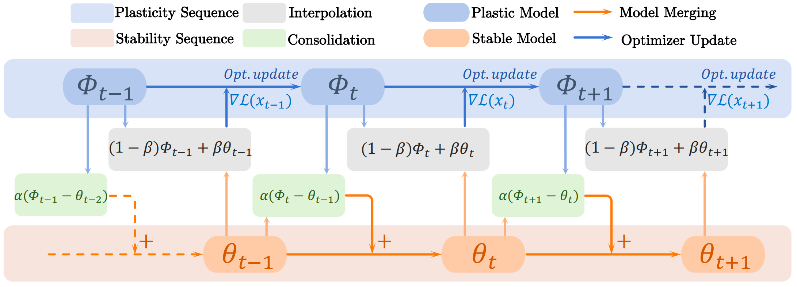
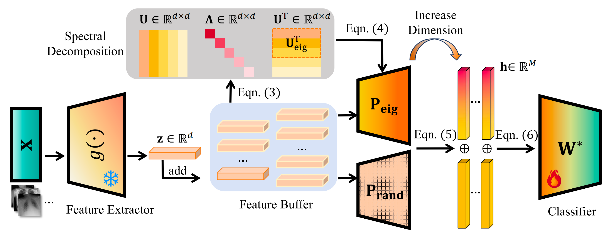

From Generic to Dedicated: A Novel Optimizer for Online Continual Learning
NeurIPS 2026
SPIN balances plasticity and stability through an interpolation-based optimizer for online continual learning.
Research Assistant · The University of Hong Kong
I am a full-time Research Assistant at The University of Hong Kong, advised by Prof. Lequan Yu. My research interests lie in continual learning, diffusion models, and AI agents, with a particular interest in medical applications.
I received my B.E. in Biomedical Engineering from Xi’an Jiaotong University in June 2026. Previously, I worked with Prof. Hong Wang on medical image class incremental learning, and with Prof. Sen Lin on optimizer design for online continual learning.

NeurIPS 2026
SPIN balances plasticity and stability through an interpolation-based optimizer for online continual learning.

MICCAI 2026
EDRP uses eigen-directed dual-view projections for training-free medical image class incremental learning.

B.E. in Biomedical Engineering
Sep. 2022 – Jun. 2026